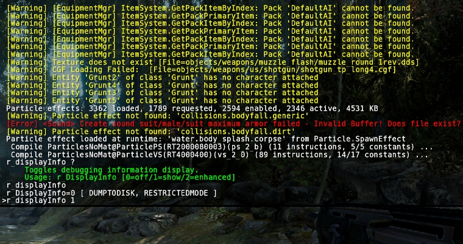
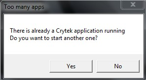

Overview
The CRYENGINE console is an in-game user interface that enables direct communication with the engine. It handles input in form of console commands and variables and displays log messages while keeping a history of user input and engine output.
Console Variables and Commands
Many aspects of the engine and game code can be tweaked with help of console variables. A console variable has a name and a value that can usually be changed. Many values can be changed at run-time using the console which makes tweaking engine or game behavior more convenient for designers and programmers than modifying configuration files or even source code.
A console variable that is used rather often is r_DisplayInfo, to which different integral numbers can be assigned. A value of '1' for example means that some basic profiling information like the current Frames Per Second are shown at the top right corner of the screen. A value of '0' disables the display of that information, while the value '2' will use another display mode with slightly different information.
Besides console variables that always have an assigned value, there are console commands that execute some specific functionality when invoked.
Basic Console Usage
From the game launcher or from within the game mode in Sandbox, the console can be opened with the tilde key ~ (caret ^ on German keyboards). In Sandbox, a separate console window is available when the user is not in game mode, usually located at the bottom of the screen.

In-game console
Message Output
The console shows the history of log messages, including warnings and errors. The list can be scrolled with the Page-Up and Page-Down keys. The amount of messages output to the console can be controlled with the log verbosity which can be configured with the CVar: log_verbosity.
log_Verbosity
DUMPTODISK
defines the verbosity level for log messages written to console
-1=suppress all logs (including eAlways)
0=suppress all logs(except eAlways)
1=additional errors
2=additional warnings
3=additional messages
4=additional comments
All console output is directed to a log file as well which is Editor.log when running Sandbox or Game.log when using the game launcher. Both of these files are stored in the root folder of the SDK.
Command Input
Besides displaying messages, the console can be used to enter commands and set the value of console variables. For executing a command, just enter the name of the command and press enter. Some commands can have additional parameters that are separated with spaces.
screenshot myScreenshotFor setting a console variable to a specific value, type the name of the variable followed by a space and the value that you want to assign.
r_DisplayInfo 1Console variables and commands are case-insensitive, so it does not matter if you use capital letters or not.
To query the value of a console variable, just type the name of the variable and press tab or enter. The value will be output to the console.
r_DisplayInfoConsole variables can have different values, where each value has usually a different meaning. Most console variables have an associated help text that lists the available values with a small description. You can see the help text by typing the variable name followed by a question mark.
r_DisplayInfo ?You can also perform keyword searches by placing a ? before the keyword. For example searching ?lase will provide results for any CVars which have "lase" in it:
?lase
hud_Crosshair_laser_fadeInTime=1 [ ]
hud_Crosshair_laser_fadeOutTime=1 [ ]
i_laser_hitPosOffset=0.1 [ ]
r_TexPreallocateAtlases=0 [ ]
Auto-Completion and Input History
The console supports auto-completion of variable and command names. Enter the beginning of a variable or command name and press the tab key. The console will show a list of corresponding commands and automatically complete the name. You can press tab several times to toggle through all available commands that match the string you have entered.
In case you need to try out many values for a variable quickly one after another, you can avoid retyping the variable by navigating through the input history using the Up and Down keys.
Available Console Variables
CRYENGINE has a huge list of console variables. Most of them are organized by module and have a corresponding prefix. The prefix r_ in r_DisplayInfo for example indicates that the variable is related to the rendering module. In order to make it easier to keep track of the available variables and commands, several ways exist to list all of them.
The command DumpCommandsVars can be used to generate a list of all registered variables and commands. By default, the list is stored in a text file called consolecommandsandvars.txt, located in the SDK root folder. A HTML version is available in the sub-folder ConsoleHTMLHelp and is best opened with index.html. If you are searching for a specific console variable of which you don't know the exact name, it can be useful to search in the text or HTML file using a text editor or browser.
The console window in Sandbox has an input box where the commands can be entered. Double-clicking on it will bring up a dialog which lists all registered console variables. It is even possible to directly change the values there.
Finally, for convenience, a pre-generated list of console variables and commands is available in the documentation.
Configuration Files
A configuration file (.cfg) can set a list of console variables and can be executed either manually via console with "exec myconfigname" or automatically by the engine, depending on the file name and location (explained below).
Each line of a config file contains the name of a CVar followed by the desired value (an optional = can be used between name and value). Single-line comments can be added with the -- character sequence.
sys_game_folder = Game
-- Disable fullscreen mode
r_Fullscreen = 0
There are are several configuration files that are executed automatically, in the following order (if a cfg is executed later, it can override previous settings):
- %USER%/game.cfg
- root/system.cfg
- root/user.cfg
The most commonly used/modified config is the system.cfg which is loaded in both Editor and Launcher. If you wish for it to only be set in the Editor, you could set it in the editor.cfg, which is loaded after system.cfg and before user.cfg.
If you wish to use a specific setting for your game every time, such as r_displayinfo 0, you could set it inside the system.cfg and that will apply the CVar automatically, every time you load the engine.
Console Variable Groups
Console variable groups provide a convenient way to apply predefined settings to multiple console variables at the same time. A CVar group can modify other console variables and groups, so it can be used to build bigger hierarchies.
Please note that cycles in the assignment are not detected and can cause crashes. CVar Groups are especially useful to define different quality profiles ("sys specs").
Registering a New Group
Each console variable group is stored as a separate .cfg file where the file name defines the name of the group. By convention, console variable groups are stored in the GameSDK\Config\CVarGroups folder (where Game is the name of the game directory).
To create a new console variable group, add a new .cfg text file to that folder.
Example file sys_spec_Particles.cfg:
[default]
; default of this CVarGroup
= 4
e_particles_lod=1
e_particles_max_emitter_draw_screen=64
[1]
e_particles_lod=0.75
e_particles_max_emitter_draw_screen=1
[2]
e_particles_max_emitter_draw_screen=4
[3]
e_particles_max_emitter_draw_screen=16
The sample file creates a new console variable group named sys_spec_Particles that behaves like an integer console variable. By default, this variable has the state 4 (because of the third line). When changing the variable value, the new state is applied to the referenced CVars.
Console variables that are not specified in the cfg file are not set. All desired console variables need to be part of the [default] section, otherwise an error message is output. If a console variable is not specified in a custom section ([1],[2],etc.) the value specified in the [default] section is applied.
Console Variable Group Documentation
Some simple documentation text that gives information about the different CVar states in a group is available automatically. Use the question mark operator as usual to output the documentation text.
Example (sys_spec_Particles):
Console variable group to apply settings to multiple variables
sys_spec_Particles [1/2/3/4/x]:
... e_ParticlesLod = 0.75/1/1/1/1
... e_ParticlesMaxScreenFill = 16/32/64/128/128
... e_ParticlesObjectCollisions = 0/1/1/1/1
... e_ParticlesQuality = 1/2/3/4/4
... e_WaterOceanSoftParticles = 0/1/1/1/1
... r_UseSoftParticles = 0/1/1/1/1
Checking the Variable Group State
When CVars organized in a CVar group that are changed individually, the CVar group might no longer represent the value that is assigned to it.
To find that out via the console, enter the CVar group name in the console. If the group variable value is not representative, the real state is printed besides the usual information.
Example:
sys_spec_Particles=2 [REQUIRE_NET_SYNC] RealState=3
sys_spec_Sound=1 [REQUIRE_NET_SYNC] RealState=CUSTOM
sys_spec_Texture=1 [REQUIRE_NET_SYNC]
By using the console command sys_RestoreSpec, it can be checked why the system spec variables don't represent the expected states.
sys_RestoreSpec
Restore or test the cvar settings of game specific spec settings,
'test*' and 'info' log to the log file only
Usage: sys_RestoreSpec [test|test*|apply|info]
Filter Console and/or File Logging
There are two CVars that can be used to filter console messages:
log_UseFilter=0,1,2,3
log_Filter="string"
To enable the console filter you have to set log_UseFilter to 1/2/3:
0 - filter is disabled
1 - filter only ingame console
2 - filter only the log file
3 - filter both
The actual filter can be set through log_Filter. This is a string that is used to filter the log messages:
log_Filter = foo //will only display messages that have the string "foo" somewhere.
log_Filter = -bar //will remove all loggings that have "bar" somewhere.
log_Filter = foo|bar|dude //you can combine different filters - this will only display loggings with "foo", "bar" or "dude" in it.
log_Filter = -foo|-bar|-dude //this will remove all loggings with "foo", "bar" or "dude" in it.
log_Filter = foo|-bar //this will display only loggings with "foo" but no "bar" in it.
How to disable "Too many apps" Message Box?
This is no longer valid for CRYENGINE 3.5 and beyond.
If you open more than one instance of the Launcher you will notice a Message Box informing you that an instance of the Launcher is already opened:

However in some situations, like multiplayer debugging, it might be necessary to open more than one instance of the Launcher on one machine. To disable the Message Box you can add the following line to your root/system.cfg config file:
ignoreTooManyAppsMessage=1